OTIUM is the practice of deliberate leisure. In the classical sense, otium is not escape from work but time when attention returns to memory, landscape, and thought — without a utilitarian deadline.
We shape routes for lingering, not for checklist tourism. The goal is presence in a place rather than consumption of sights.
OTIUM is not a tour operator. It is an invitation to walk, pause, and leave a route unfinished if the light on a façade deserves another minute.
Historical and reference coats of arms
Berlin
Guide. Places in this edition: 38.
Historical overview
Berlin is the capital of Germany and its largest city—a focal point of Prussian, republican, divided, and reunified Europe.
From a trading settlement to a royal residence, through war and partition, Berlin carries visible memory in monuments and voids. It is now a multilingual centre of museums, research, and civic experiment on a generous park landscape.
After 1990 institutions returned to a reunified centre; Berlin became a stage for major cultural forums. Start-ups, migration, and memorial sites now coexist as the city tests models of affordable housing and climate-aware growth.
Trip ideas
One day
A compact loop linking the strongest cards in this guide, ordered to minimise backtracking on foot.
Perched high above Berlin's historic Tiergarten park, Bellevue Palace is a majestic 19th-century palace that once served as the summer residence of Prussian monarchs and now stands as a symbol of German history and culture. White classical palace in a park—official residence of Germany’s Federal President (not the chancellor). The palace was designed by architect Karl Friedrich Schinkel, who also created numerous other notable buildings in Berlin. It features neoclassical architecture, characterized by its symmetrical design and grand columns. Bellevue Palace has been used for official ceremonies and state visits since its construction. Today, it serves as the official residence of Germany's President. Its location within the picturesque Tiergarten park provides visitors with a tranquil setting for reflection and relaxation. Interior not routinely open; respect fence lines on state visits. Peacocks sometimes roam the adjacent lawns.
Built in 1826, Bellevue Palace was originally constructed for King Frederick William III and Queen Louise to provide them with a serene retreat amidst nature. Over time, it became the favored summer home of successive Prussian rulers, hosting state dinners and diplomatic gatherings. Today, its elegant architecture and stunning views make it one of Berlin’s most iconic landmarks. Built as a summer palace in the 1780s; spared heavy damage; restored as ceremonial head-of-state home. Visiting Bellevue Palace offers a unique opportunity to explore the historical heart of Berlin while enjoying panoramic vistas of the city. Quiet photo stop along Tiergarten walks from the Siegessäule.
Berlin Aquarium
Period: 1903
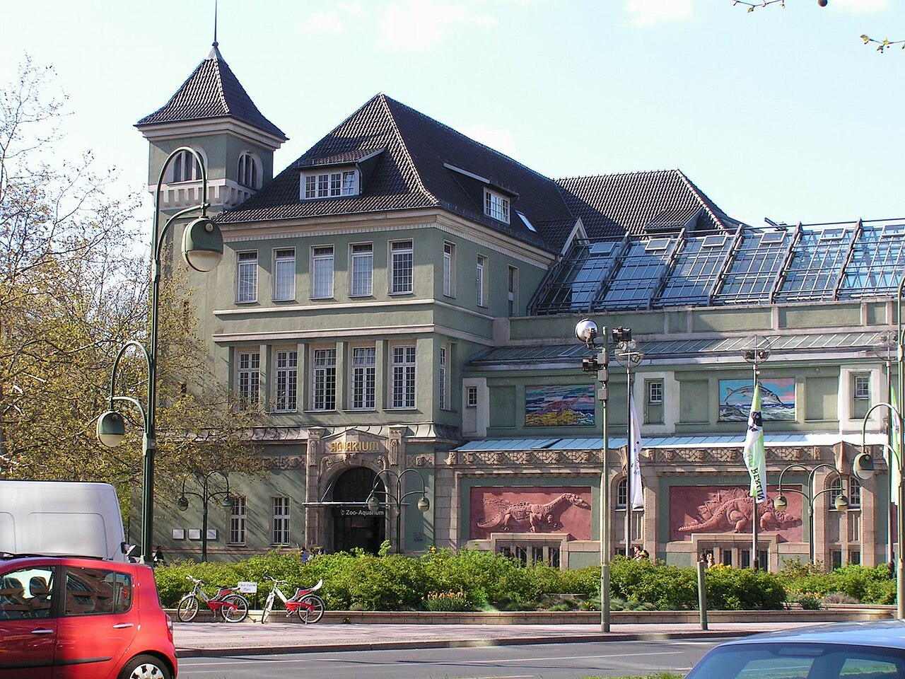
Established in 1903, Berlin Aquarium is one of the oldest and most iconic aquatic centers in Germany. Located on the banks of the River Spree, it showcases a diverse array of marine life, including tropical fish, sharks, and various amphibians. It houses over 4,000 specimens representing more than 600 different species. The aquarium features several themed sections, such as coral reefs, deep-sea zones, and freshwater ecosystems. One of its highlights is the shark tank, which allows visitors to observe these predators up close through large viewing windows. Regular educational programs are offered, allowing visitors to learn about conservation efforts and sustainable practices. The building itself has undergone several renovations since its opening but retains its historical charm.
Opened in 1903, the Berlin Aquarium was originally designed as a scientific research facility for studying aquatic species. Over time, it evolved into a popular tourist attraction, attracting visitors with its extensive collection of marine animals and educational exhibits. Visiting Berlin Aquarium offers an opportunity to explore the underwater world without diving, providing insights into the natural habitats of various sea creatures.
Berlin Cathedral
Address: Am Lustgarten, Mitte | Style: Historicist / Neo-Renaissance | Period: 1894–1905
Perched on Berlin's Museum Island, the Berlin Cathedral is a soaring symbol of Germany’s rich cultural heritage and religious tradition. Its domed structure dominates the skyline, offering visitors a majestic view of the city below. Massive Protestant cathedral with a copper-green dome overlooking the Lustgarten and Museum Island. The cathedral's dome measures approximately 91 meters high, making it one of the tallest structures in Berlin. It houses numerous works of art by renowned artists such as Max Liebermann and Adolf von Hildebrand. During World War II, the building sustained significant damage but was meticulously restored post-war. Since 1920, the cathedral has been used primarily for state ceremonies and official occasions. In recent years, it has also become a popular venue for classical music concerts. Hohenzollern crypt tours explain royal burials. Contrast liturgy schedule with museum opening hours.
Constructed between 1894 and 1905, the cathedral was originally intended to serve as a royal church for Prussia's monarchs. However, it later became a national monument after World War II, symbolizing unity amidst division during the Cold War era. Today, its neo-Renaissance architecture stands out as one of Europe's most impressive examples of late-19th-century ecclesiastical design. Hohenzollern court church rebuilt after 1894 in Historicist style; heavily damaged in 1944, restored after reunification. Visiting the Berlin Cathedral allows travelers to experience both the historical grandeur and spiritual significance of this iconic landmark. Major concert venue, baptisms of princes in the past, and a climbable dome gallery.
Berlin Central Station
Address: Washingtonplatz, Mitte | Style: Contemporary station architecture | Period: 1881–1882
Berlin Central Station is the hub of Germany's capital, a grand monument to modern architecture and transportation efficiency. Glass cross-shaped terminus on multiple levels—main rail hub since 2006 north of the government quarter. It is located at the heart of Berlin’s Mitte district, making it easily accessible via multiple transport options. The station handles over 400,000 passengers daily, making it one of the busiest stations in Europe. Its distinctive glass dome, known as the 'Funkturm,' provides panoramic views of the city center. Inside, visitors can explore shops, cafes, and restaurants offering local cuisine and souvenirs. Regularly featured in films and television shows, it adds a touch of cinematic charm to everyday life. Allow time to change between upper and lower platforms. Walk west toward Reichstag along the Spree bank.
Built between 1881 and 1882, Berlin Central Station was originally designed by architect Paul Wallot as a symbol of imperial power and progress. Over time, it has evolved into one of Europe’s most important hubs for rail travel, connecting major cities across the continent. Its iconic glass roof, completed in 1913, remains a testament to its historical significance and architectural prowess. Replaced older Lehrter Bahnhof footprint; engineering feat spanning regional, ICE, and S-Bahn lines. Visiting Berlin Central Station allows travelers to experience the intersection of history, culture, and modern transportation. Practical gateway with shops and views of the river Spree.
Berlin TV Tower
Address: Alexanderplatz, Mitte | Style: 20th-century modern tower | Period: 1965–1969
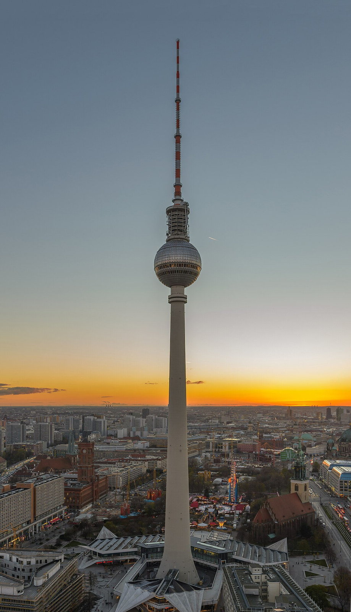
The Berlin TV Tower rises majestically above the cityscape, offering panoramic views of Berlin's historic landmarks and modern architecture. 368-metre GDR-era needle with viewing sphere and revolving restaurant—dominant on the skyline. At 368 meters high, it is the tallest structure in Germany and the third-tallest free-standing structure in Europe. It was designed by architect Hellmut Hentrich and engineer Oskar Nerlinger. The tower features an observation deck at 203 meters with unobstructed views of the city. A revolving restaurant rotates continuously, offering diners a constantly changing view of the capital. In addition to being a tourist attraction, the tower also serves as a television and radio transmitter. Book tickets to skip peak queues. The Weltzeituhr (world clock) sits at the plaza foot.
Completed between 1965 and 1969, the tower was built as a symbol of East Germany's technological prowess during the Cold War era. Standing at 368 meters tall, it became one of the tallest structures in Europe and remains a prominent landmark today. Completed in 1969 as a prestige project; still operated as a broadcast tower and observation attraction. Visitors come to the tower for its breathtaking vistas and historical significance, providing a unique perspective on Berlin’s past and present. Orientation landmark visible from many Berlin districts.
Berlin Wall Memorial
Period: 1961
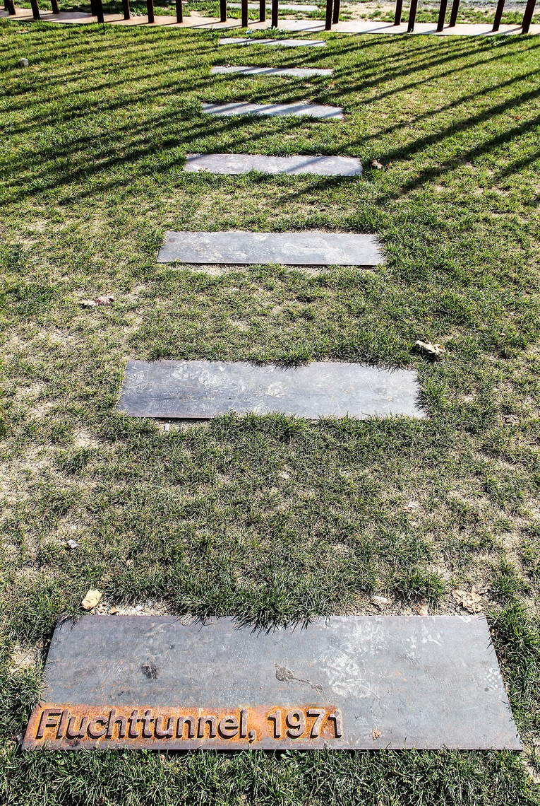
The Berlin Wall Memorial is a somber and reflective site that marks the former boundary between East and West Berlin, symbolizing the division of Germany during the Cold War era. The memorial includes the original concrete slabs of the wall, now arranged to form a jagged path through the landscape. It features a museum displaying artifacts and personal stories of those affected by the wall's presence. One section of the wall remains intact, providing visitors with a tangible connection to its past. The site also commemorates the victims of the border crossings and escape attempts. Each year on November 9th, thousands gather at the site to remember the fall of the Berlin Wall and the reunification of Germany.
Constructed in 1961, the Berlin Wall served as a physical barrier separating families, friends, and communities for nearly three decades. It was a stark reminder of the political divide between East and West Germany, representing the heightened tensions of the Cold War. The wall became a global symbol of oppression and resistance, with many daring escapes becoming legendary. Visiting the Berlin Wall Memorial offers a profound understanding of the historical struggles and sacrifices made by those who lived through this time.
Berlin Zoological Garden
Period: 1844
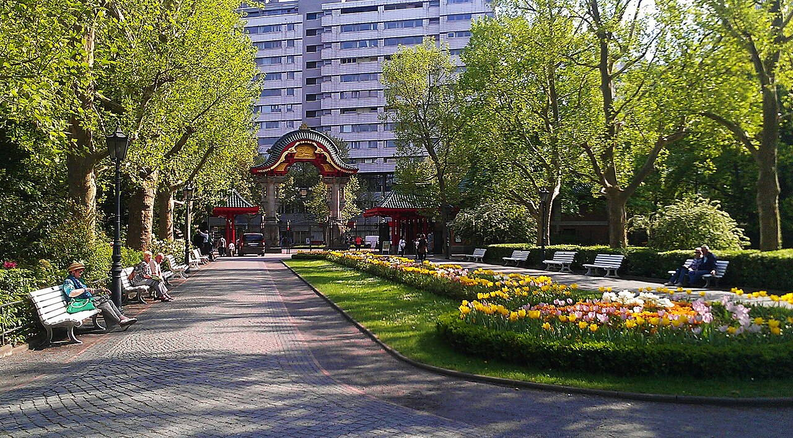
Established in 1844, the Berlin Zoological Garden is one of Europe's oldest and most celebrated zoos. Located in the heart of Tiergarten Park, it spans over 36 hectares and houses a diverse collection of animals from around the world. It is home to more than 1,500 animal species representing nearly 400 different kinds of animals. The zoo features several iconic exhibits including the Orangutan House, Elephant House, and Primate House. In addition to its educational programs, the garden hosts numerous cultural events and performances throughout the year. Since its establishment, the zoo has played a significant role in advancing zoological science and wildlife preservation. Notable landmarks include the Tropische Haus (Tropical House) and the Aquarium.
Originally founded as the Königliches Zoophyllische Museum und menagerie (Royal Zoological Museum and Menagerie), the zoo was opened to the public in 1844 by King Frederick William IV. Over time, it has grown into a major scientific research institution and tourist attraction, showcasing various ecosystems and habitats. The Berlin Zoological Garden offers visitors a unique opportunity to observe rare species and learn about conservation efforts worldwide.
Berlinische Galerie
Style: neoclassical | Period: 1861
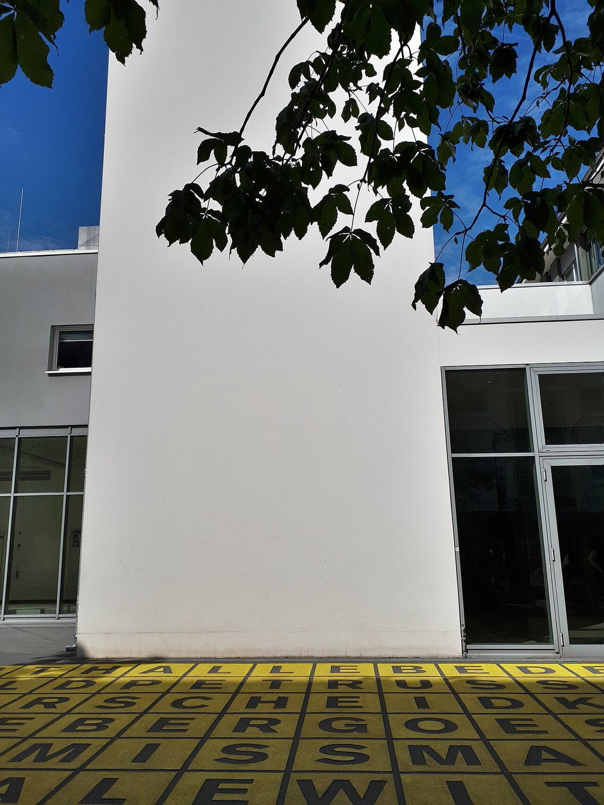
Established in 1861, the Berlinische Galerie is a museum dedicated to showcasing the art and cultural heritage of Berlin. It houses collections that reflect the city's evolution through various historical periods. The museum opened in 1861 during the reign of King Wilhelm I. It originally housed artifacts from ancient Greece and Rome but evolved to encompass contemporary works by local artists. Today, visitors can explore exhibitions ranging from early medieval artifacts to modern installations. Its collection includes notable pieces by renowned German artists such as Max Beckmann and Georg Grosz.
Founded in 1861 as part of the Prussian Royal Museums, the Berlinische Galerie has undergone several transformations over its long history. Originally focused on classical antiquities, it later expanded its scope to include modern art and urban culture. Today, it stands as one of Berlin's most important institutions for understanding the city's artistic and social development. Visiting the Berlinische Galerie provides insight into how art and culture have shaped Berlin’s identity throughout the centuries.
Bode Museum
Address: Museumsinsel, Mitte | Style: Neo-Baroque / historic museum architecture | Period: 1859
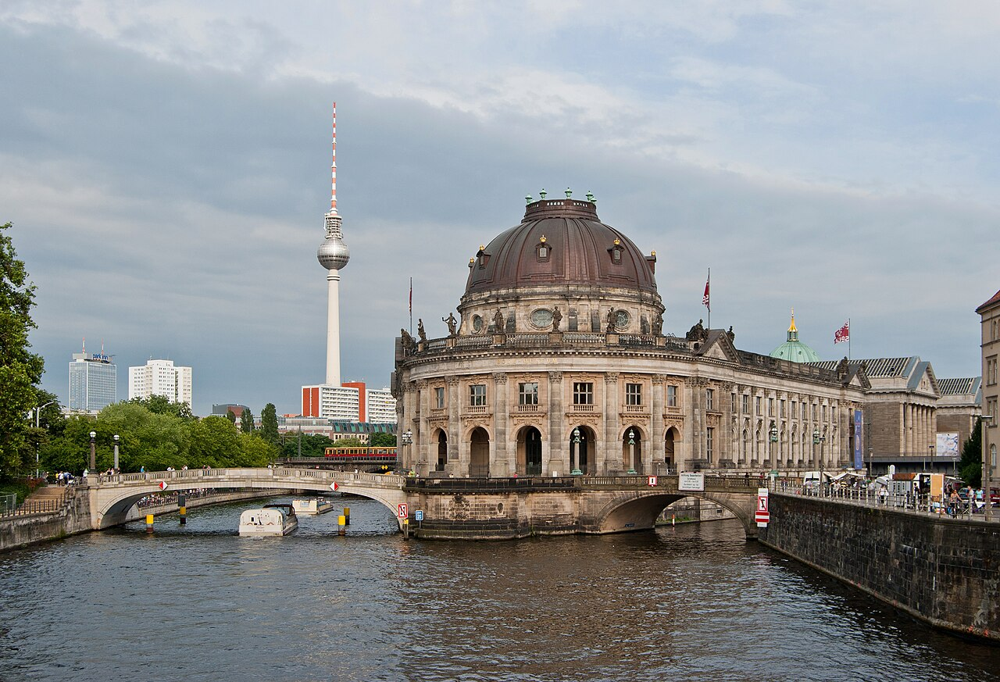
The Bode Museum is a treasure trove of art and culture nestled within Berlin's historic Museum Island. Built in 1859, it showcases masterpieces spanning the Middle Ages to the Renaissance. Museum Island temple to sculpture and Byzantine art—domes and steps face the Spree toward the TV tower. It houses one of Europe’s largest coin collections. Its interior boasts ornate decorations typical of late-19th-century museum design. The museum also contains significant works by German artists like Albrecht Dürer. In addition to art, it preserves valuable manuscripts and documents from the Middle Ages. Since 2006, it has been managed by Stiftung Preußischer Kulturbesitz. A combined Museum Island ticket saves repeated entry. Ferry and bridge approaches give classic photo angles.
Originally constructed as part of Kaiser Friedrich Museum in 1859, the Bode Museum later became home to collections of numismatics, sculpture, and medieval artifacts. Its architecture reflects neo-Renaissance style, with intricate details and classical elements. Opened as the Kaiser-Friedrich-Museum in 1904; renamed for curator Wilhelm von Bode; part of the UNESCO island ensemble. Visitors come here for its extensive collection of coins, sculptures, and historical artifacts that offer insight into Germany’s rich cultural heritage. Masterpieces from medieval Europe through Italian Renaissance bronzes.
Brandenburg Gate
Address: Pariser Platz, Mitte | Style: Neoclassical | Period: 1788–1791
The Brandenburg Gate is Berlin's iconic symbol of unity and peace, standing majestically at the city's center since the late 18th century. Neoclassical city gate crowned with the Quadriga chariot—now a pedestrian symbol of reunification between East and West. Constructed in neoclassical style, the gate features twelve Ionic columns and depicts allegorical sculptures representing virtues such as Peace and Victory. It was severely damaged during the Second World War and reconstructed following German reunification in 1990. Located on the famous Unter den Linden boulevard, the gate overlooks the historic Tiergarten park. Today, the Brandenburg Gate hosts numerous ceremonies, including presidential inaugurations and state visits. The gate has become one of Berlin's most photographed landmarks. Bikes cross in designated lanes; tours often start here toward Unter den Linden. The Adlon Hotel and embassies frame the square.
Built between 1788 and 1791 by Carl Gotthard Langhans, the gate originally served as a triumphal arch for Prussian monarchs. It was heavily damaged during World War II but restored to its former glory after the Cold War ended. Today it stands as a unifying symbol of Berlin’s post-war reconstruction and reconciliation. Completed in the 1790s; the Quadriga was removed and restored several times across wars and partitions. The gate stood closed in the Wall era. Visit the Brandenburg Gate to witness Berlin’s historical evolution and celebrate its resilience through time. Default meeting point for visitors and stage for major public events.
Sitting majestically on the banks of the River Spree, Charlottenburg Palace is Berlin's largest and most impressive Baroque palace. Built for Sophie Charlotte, wife of Frederick I, it showcases lavish interiors and exquisite gardens. Baroque and rococo palace with formal gardens and the Belvedere tea house—Berlin’s largest Hohenzollern residence. It is the largest Baroque palace in Germany. The palace houses one of Europe’s finest collections of porcelain. Its gardens feature fountains, statues, and elaborate paths. Queen Sophie Charlotte commissioned the palace. Renovated multiple times since construction. Combined ticket often covers the New Wing. The Mausoleum holds royal tombs in the park.
Constructed between 1695 and 1713, Charlottenburg Palace was originally intended as a summer residence for Queen Sophie Charlotte. Designed by architect Nicolai, its lavish interior features intricate stucco work, grand hallways, and opulent decorations. The palace has undergone several renovations over the years but retains much of its original charm and grandeur. Begun as a summer lodge for Sophie Charlotte in the late 17th century; wings and theaters grew through the 18th century. Visitors come to admire its stunning architecture, sumptuous interiors, and extensive landscaped gardens. Art collections, porcelain rooms, and park walks away from downtown crowds.
Checkpoint Charlie was a famous Cold War-era crossing point between East and West Berlin, symbolizing the division of Germany during the post-WWII era. Former Allied crossing booth, now a busy corner with exhibition cabins and outdoor photo ops of the barrier replica. It was located at Friedrichstraße and Mauerstraße, near the Berlin Wall. The name 'Checkpoint Charlie' originated from its designation as Checkpoint C by the US Army. During the Cold War, it was one of several border crossings but became particularly well-known due to its strategic importance and frequent media coverage. After the fall of the Berlin Wall in 1989, Checkpoint Charlie ceased functioning as a border control point. Today, it serves primarily as a tourist attraction and museum. Haus am Checkpoint Charlie museum is dense but popular. Expect costumed actors asking tips for photos.
Established in 1961, Checkpoint Charlie became one of the most iconic symbols of the Iron Curtain. It was a heavily guarded border checkpoint where Allied forces could cross into East Berlin, while civilians were strictly controlled by the East German authorities. The site gained international fame after numerous high-profile escapes and attempts to flee from East Berlin through its gates. Cold War flashpoint of tank standoffs and escapes; commercial signage competes with education today. Today, Checkpoint Charlie is a must-visit for anyone interested in understanding the historical divide that shaped modern Europe. Icon of divided Berlin—inform yourself at nearby Wall exhibitions for depth.
Deutsches Historisches Museum
Style: Neoclassical with modern additions | Period: 1830 (original construction); renovated and expanded in 2006
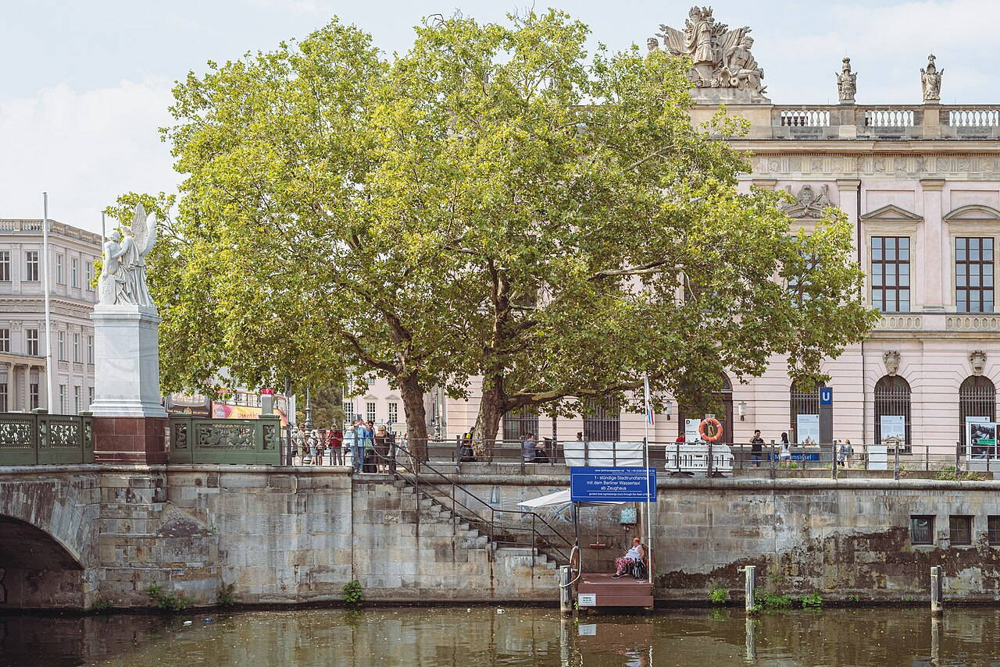
The Deutsches Historisches Museum is Berlin's premier historical institution, showcasing the complex and often turbulent history of Germany over centuries. It houses one of the largest collections of historical artifacts in Europe. Exhibits include artifacts ranging from ancient coins to contemporary media. The museum is located on Museum Island, a UNESCO World Heritage Site. Regularly hosts temporary exhibitions focusing on specific periods or themes. Features interactive displays and multimedia resources to enhance visitor engagement.
Established in 2006 after a major renovation and expansion, the museum occupies a historic building originally constructed in 1830 as the Royal Library. It was later used for various purposes including housing the Prussian State Archive before becoming the home of the Historical Museum in 1967. The current iteration combines modern architecture with traditional elements to create a unique space that reflects both past and present. Visitors can explore exhibits covering key moments in German history, from medieval times through World War II and its aftermath.
East Side Gallery
Address: Mühlenstraße, Friedrichshain | Style: Cold War concrete / mural art | Period: 1990
The East Side Gallery is a world-famous open-air art exhibition located along the former Berlin Wall. It stretches for over 1.3 kilometers and showcases more than 100 murals painted by artists from around the globe. Longest open-air segment of painted Berlin Wall along the Spree—murals by international artists after 1989. It is the longest surviving section of the original Berlin Wall. Over 100 artists contributed their work to the project. The gallery has been restored several times since its creation to preserve its integrity. Visitors can walk alongside the artwork, which includes both permanent pieces and temporary installations. Some sections are illuminated at night, enhancing the experience. Walk toward Ostbahnhof for cafés and river views. Some paintings have been restored after weather damage.
Commissioned after the fall of the Berlin Wall in 1989, the East Side Gallery was originally intended to commemorate the historical significance of the wall's collapse. Over time, it evolved into an international artistic expression, with each mural telling its own story of freedom, unity, and peace. Industrial border strip became a canvas; the “kiss” mural by Dmitri Vrubel is one of the best known images worldwide. A must-visit for anyone interested in modern art and the city's rich political history. Street-art memorial and riverside promenade.
Futurium
Style: Contemporary | Period: 2004
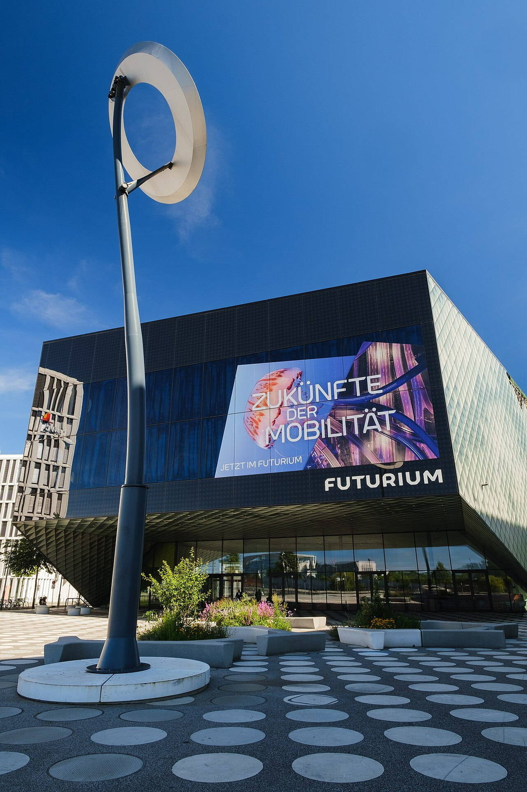
The Futurium is a modern museum and science center located in Berlin's Tempelhof-Schoenefeld district, opened in 2004. It showcases exhibits on future technologies, innovations, and scientific advancements. It features interactive exhibits and hands-on experiences for visitors of all ages. Exhibits explore topics such as artificial intelligence, renewable energy, and space exploration. The museum hosts regular workshops, lectures, and events focused on innovation and sustainability. Located near the former airport site of Tempelhof, it serves as a symbol of Berlin’s transformation and renewal. Architecturally, the Futurium reflects the city's commitment to progress and innovation.
Established in 2004, the Futurium was designed to inspire curiosity and promote understanding of emerging technologies and their impact on society. The building itself is a testament to contemporary architecture, combining glass, steel, and concrete to create a futuristic aesthetic. Visiting the Futurium offers insights into cutting-edge research and technological developments that shape our future.
Gendarmenmarkt
Address: Mitte | Style: Baroque / Neoclassical ensembles | Period: late 18th century
At the heart of Berlin's historic center lies Gendarmenmarkt, a picturesque square framed by two neoclassical churches and a concert hall. This charming plaza is often referred to as 'Berlin's little Paris,' with its elegant architecture and vibrant atmosphere. Symmetrical square with French and German cathedrals flanking Schinkel’s concert hall—classic Berlin symmetry. The square is bounded by the French Cathedral and the German Cathedral, both constructed in the early 19th century. The Konzerthaus, a concert hall renowned for its acoustics, overlooks the square. Gendarmenmarkt has been a hub for cultural activities since its inception, including concerts, festivals, and literary gatherings. During World War II, the area suffered significant damage but was later restored to its former glory. Today, the square remains a symbol of Berlin’s resilience and cultural vitality. Evening floodlighting highlights colonnades. Short walk to Unter den Linden and State Opera.
Built in the late 18th century during Prussia’s Enlightenment era, Gendarmenmarkt was originally designed as a military parade ground. Today it stands as one of Berlin’s most iconic squares, hosting cultural events and serving as a gathering point for locals and tourists alike. 18th-century marketplace for the regiment of gens d’armes; rebuilt after fires with unified façades. Visit Gendarmenmarkt to immerse yourself in Berlin’s rich architectural heritage and enjoy its serene yet lively ambiance. Christmas market location and home of the Konzerthaus orchestra.
Grosser Stern (73584061)
Address: See official visitor information.
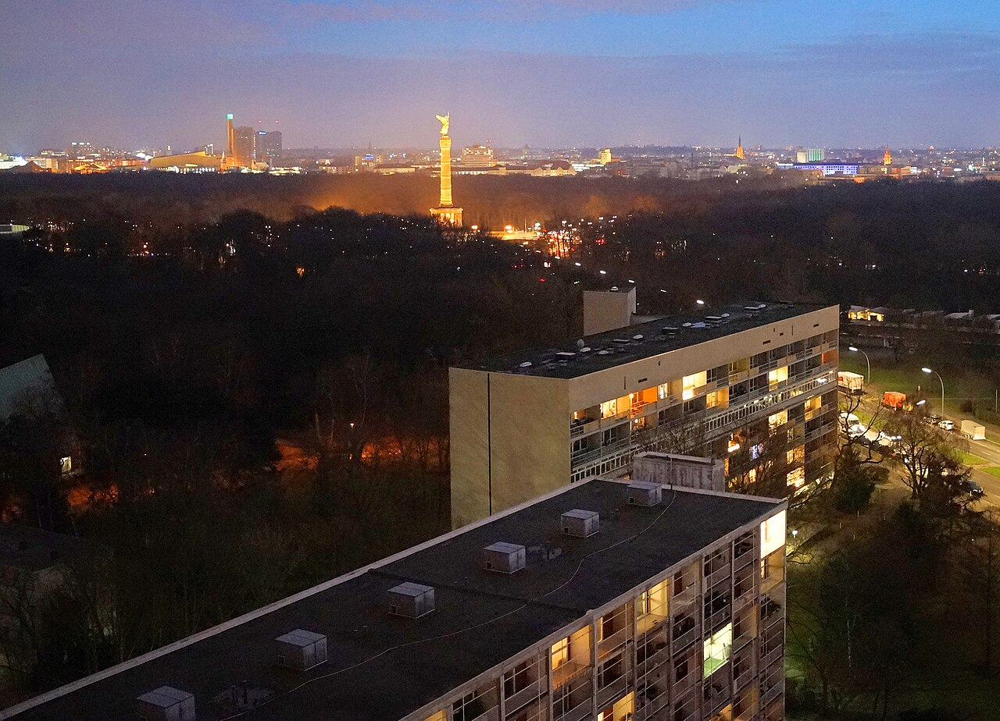
Humboldt Forum
Style: Baroque | Period: 1709 (original palace); renovated and reopened in 2008
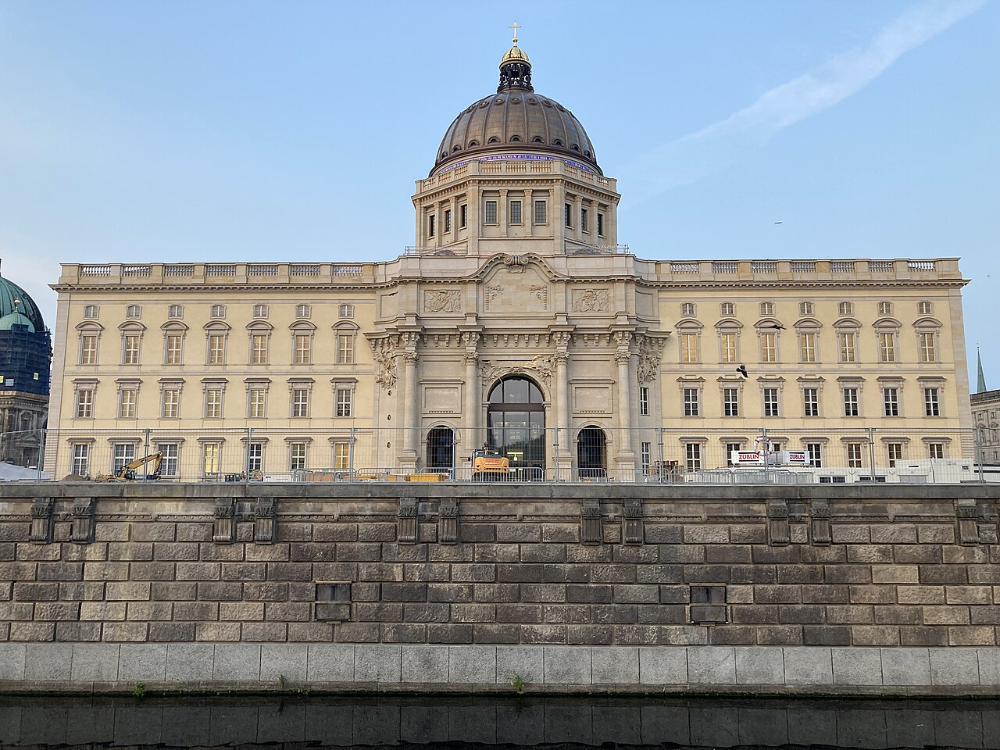
The Humboldt Forum is a grand museum and cultural center located in Berlin's historic Museum Island. It showcases art, history, and culture across multiple floors. It occupies one of the most significant architectural landmarks on Museum Island. Its design combines Baroque architecture with modern elements, creating a unique fusion. Exhibits include works by famous artists such as Rembrandt and Matisse. The forum hosts temporary exhibitions that highlight contemporary issues and global perspectives. It offers panoramic views of Berlin from its rooftop terrace.
Originally built as the Palace of the Prussian Kings in 1709, it was later transformed into the Royal Academy of Sciences by Frederick II in 1752. After World War II, the building fell into disrepair until its renovation and reopening in 2008 as the Humboldt Forum, honoring the legacy of Alexander von Humboldt, a renowned naturalist and explorer. Visit the Humboldt Forum to explore its rich collections of art, science, and history, reflecting Berlin’s vibrant cultural heritage.
The Jewish Museum Berlin is a testament to the rich and tragic history of German Jewry, showcasing artifacts, artworks, and exhibits that explore the vibrant cultural contributions and the devastating losses experienced by Jews in Germany. Daniel Libeskind’s zinc zigzag building with void axes—exhibitions on German-Jewish history and culture. Designed by Daniel Libeskind, the museum's architecture is a striking example of contemporary architecture. It houses one of the largest collections of Jewish artifacts outside Israel. Exhibits include artwork by artists like Marc Chagall and Otto Dix. The museum commemorates the victims of Nazi persecution and explores themes of memory and identity. Its location on Bernauer Straße connects it to the former East-West divide. Timed tickets at peak periods. The old building hosts changing installations.
Opened in 2001, the museum was designed by renowned architect Daniel Libeskind and stands as a poignant symbol of remembrance and education. Its architecture, with its jagged silhouette and open voids, evokes both the fragmented memories of Holocaust survivors and the openness to future possibilities. The museum's exhibits trace the journey of Jewish life in Germany, from medieval times through modern history, highlighting key moments such as emancipation, assimilation, and persecution. Opened in 2001 beside a former courthouse; rebuilt and expanded with careful landscaping of exile gardens. Visiting the Jewish Museum Berlin offers insight into the complexities of German-Jewish identity and serves as a powerful reminder of the importance of tolerance and understanding. Major research museum beyond Holocaust narrative alone.
The Kaiser Wilhelm Memorial Church is a striking landmark in Berlin's historic Mitte district, known for its towering spire and symbolic significance. Bomb-scarred belfry beside a modern octagonal church—nicknamed “hollow tooth” for its ruined spire. It was originally designed by architect Ernst von Ihne in the neo-Gothic style. The tower stands at 98 meters tall, making it one of the tallest structures in central Berlin. After the war, the ruined nave was preserved intentionally to serve as a lasting reminder of the city's past. Today, visitors can climb the tower for panoramic views of the city. Adjacent to the church is the nearby Holocaust Memorial, highlighting the importance of remembrance. Blue light fills the new church’s stained-glass block walls. Christmas market crowds fill the plaza in December.
Built between 1891 and 1905, the church was dedicated to Emperor William I of Germany. After being heavily damaged during World War II, it was left as a ruin as a memorial to peace and reconciliation. The remaining tower became a symbol of resilience and hope for post-war Berlin. Original church consecrated in 1895; RAF raid in 1943 left the tower shell; Egon Eiermann’s 1960s buildings pair with the ruin intentionally. Visiting the church offers a powerful reminder of Berlin’s history and serves as a poignant reflection on the city's recovery after devastation. Peace memorial and busy Kurfürstendamm anchor.
Lustgarten (Museum Island)
Style: classical | Period: late 18th century
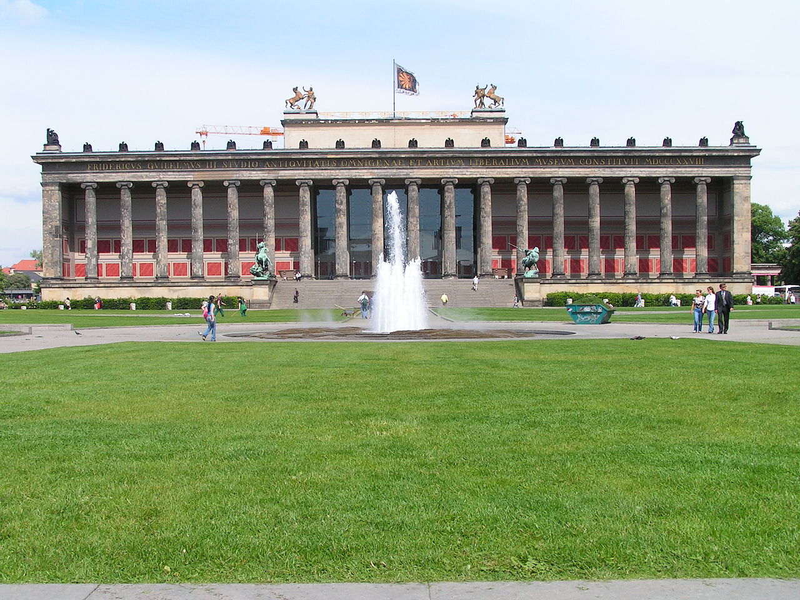
At the heart of Museum Island lies Lustgarten, a picturesque square framed by classical architecture and historical monuments. This open space serves as both a tranquil retreat and a vibrant hub for cultural activities. Constructed during the reign of King Frederick II of Prussia. Formerly known as Königliches Freyhausplatz. Renovated several times since its initial design. Adjacent to the famous Humboldt Forum. Hosted significant political rallies throughout Germany's modern history.
Originally designed by architect Johann Gottfried Tulla in the late 18th century, Lustgarten was intended to be a grand public garden. Over time, it became a central gathering point for Berliners and visitors alike, hosting festivals, parades, and ceremonies. Today, its serene atmosphere remains unchanged, offering a peaceful escape amidst the bustling city life. Visit Lustgarten to experience the harmonious blend of nature and culture, surrounded by iconic landmarks such as the Altes Museum and Neues Museum.
Mauerpark
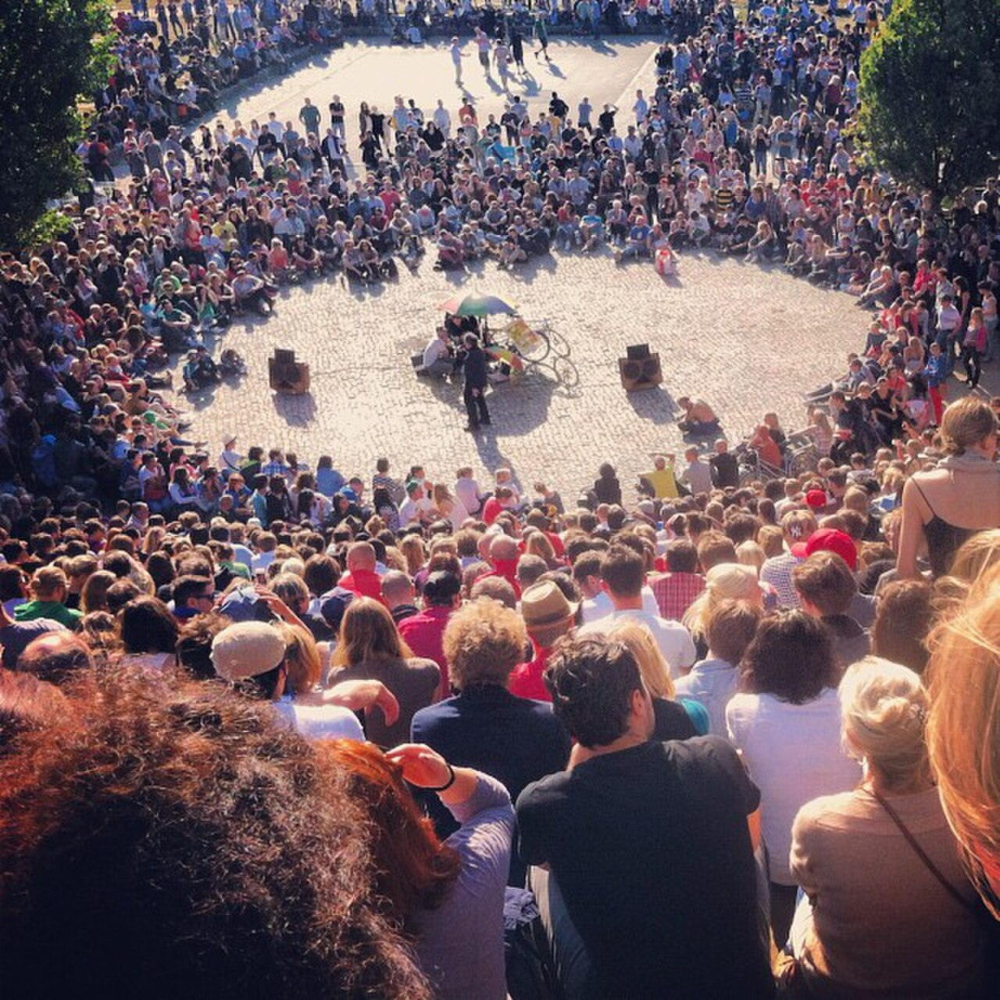
Mauerpark is a vibrant urban park located just west of Berlin's central district, offering visitors a unique blend of green space and cultural diversity. Originally established as part of the former West Berlin, it was once known for its proximity to the infamous Berlin Wall, which stood nearby until its fall in 1989. The park features open spaces, playgrounds, and walking trails surrounded by greenery. It hosts regular markets selling handicrafts, food, and local products. Each Sunday, the park becomes a hub for street performers, musicians, and artists showcasing their work. Nearby attractions include the Checkpoint Charlie Museum and the Berlin Wall Memorial. Mauerpark has become one of Berlin's most iconic spots for socializing and enjoying outdoor activities.
Before becoming a bustling park, Mauerpark served as a key area during the Cold War era, with its location close to the Berlin Wall making it a focal point for both East and West Berliners. After the wall came down, the park transformed into a symbol of unity and peace, hosting various festivals and events that celebrate Berlin’s rich cultural heritage. Visitors come to Mauerpark to experience its lively atmosphere, diverse community gatherings, and the sense of historical significance tied to its past.
Memorial to the Murdered Jews of Europe
Address: Cora-Berliner-Straße, Mitte | Style: Contemporary memorial landscape | Period: 2005
The Memorial to the Murdered Jews of Europe is a solemn and thought-provoking memorial complex located in Berlin's heart, dedicated to honoring the memory of those who perished during the Holocaust. Designed by architect Pyotr Eisenman and engineer Buro Happold, it opened in 2005. Field of 2,711 concrete stelae on undulating ground; information centre underground explains the project context. It covers an area of approximately 19,000 square meters. Each slab has a different height and angle, creating a unique experience for visitors. The memorial includes a museum and documentation center providing historical context. Located near the Brandenburg Gate and the Reichstag, it blends seamlessly with its surroundings. Its design was chosen through an international competition. Walking between blocks is allowed but not for climbing or loud groups. Combine with Brandenburg Gate on a short walking loop.
Completed in 2005, the memorial consists of 2711 concrete slabs arranged in a grid pattern, representing the vast number of Jewish communities that were destroyed during World War II. The design aims to evoke feelings of disorientation and loss, reflecting the trauma and suffering endured by victims and their families. Designed by Peter Eisenman and opened in 2005 after extended debate about form and site. Visiting the memorial provides insight into the horrors of the Holocaust and serves as a powerful reminder of humanity’s capacity for evil. Central German memorial to murdered European Jews—visit with quiet conduct.
Moschee Wilmersdorf
Address: See official visitor information.
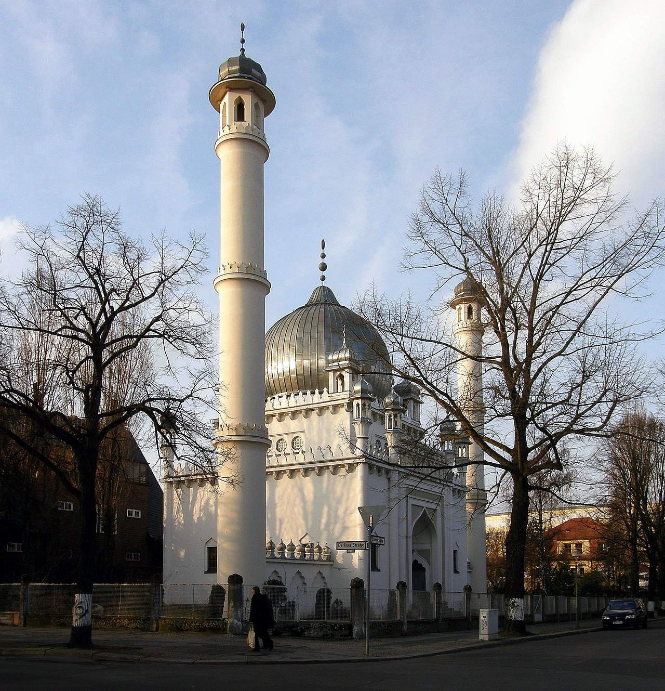
Museum für Naturkunde
Style: Neoclassical | Period: 1904
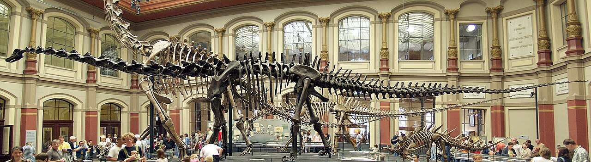
The Museum für Naturkunde is Berlin's natural history museum, showcasing the largest collection of dinosaur bones and specimens in Europe. It houses over 30 million zoological and paleontological specimens. Its iconic blue whale model measures 25 meters long. The museum holds one of the most complete T. rex skeletons outside the US. Exhibits cover topics ranging from evolution to climate change. Visitors can explore interactive displays and touch-screen stations.
Established in 1810 as part of the University of Berlin, it was originally housed at Schloss Charlottenburg before relocating to its current location on Invalidenstraße in 1910. The building itself is a neoclassical masterpiece designed by architect Ernst von Ihne, completed in 1904. Notable exhibits include the world's largest blue whale skeleton and a full-scale replica of Tyrannosaurus rex. This museum is significant for its extensive collections of fossils, animals, and plants, offering visitors a deep understanding of Earth’s biodiversity through time.
Neue Wache
Style: Classical | Period: 1816–1818
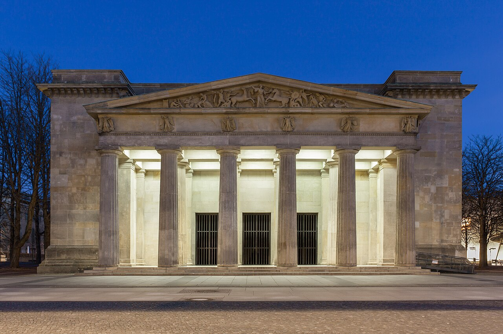
The Neue Wache is a solemn and iconic landmark in Berlin's Tiergarten park, known for its stark simplicity and timeless design. Designed by Carl Ferdinand Langhans, the same architect behind the Brandenburg Gate. Its simple cube-like structure features a single column and a bronze sculpture by Ernst Barlach. It was used as a military barracks until 1930 before becoming a war memorial. Today, it houses the 'Unknown Soldier' tomb and serves as a site for commemorative ceremonies. The building's minimalist architecture reflects the somber mood of remembrance.
Built between 1816 and 1818 during the reign of King Friedrich Wilhelm III, the Neue Wache originally served as a guardhouse for the royal family. Over the years it has been transformed into a memorial, honoring German soldiers who died in World War I and later serving as a symbol of remembrance and peace. A must-visit for those seeking to understand Berlin’s rich history and cultural heritage, the Neue Wache stands as a testament to Germany’s commitment to memory and reflection.
Oberbaum Bridge
Address: Between Friedrichshain and Kreuzberg | Style: Brick neo-Gothic bridge | Period: 1894–1896
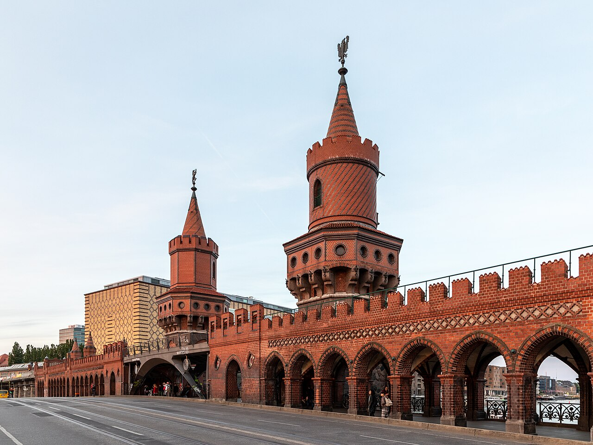
The Oberbaum Bridge is a grand landmark of Berlin, spanning the Spree River and connecting the districts of Friedrichshain-Kreuzberg with Mitte. Completed in 1896, it was originally designed to accommodate both pedestrians and horse-drawn carriages. Red-brick double deck for U-Bahn and road across the Spree—Friedrichshain’s favorite sunset silhouette. It is one of the oldest surviving bridges in Berlin. Its name translates to 'Upper Gate Bridge' due to its location near the former city gate. The bridge has been featured prominently in films such as The Lives of Others. Restoration work was completed in 2010 to ensure its continued use and preservation. It remains an important cultural symbol representing Berlin’s industrial past. Open-air cinema and beach bars cluster on the Friedrichshain bank. U1 crosses on the upper deck.
Built between 1894 and 1896, the Oberbaum Bridge served as a vital transportation link for Berlin's expanding urban areas. Designed by architect Ernst von Ihne, its distinctive neo-Renaissance style features three arches and two towers, making it one of the city's most iconic structures. Merchant bridge rebuilt in the 1890s; border crossing closed under the Wall, reopened for unified Berlin. Visiting the Oberbaum Bridge offers a glimpse into Berlin’s architectural heritage and provides stunning views over the Spree River. Link between nightlife districts and riverside paths.
Pergamon Museum
Style: Classical Revival | Period: 1930
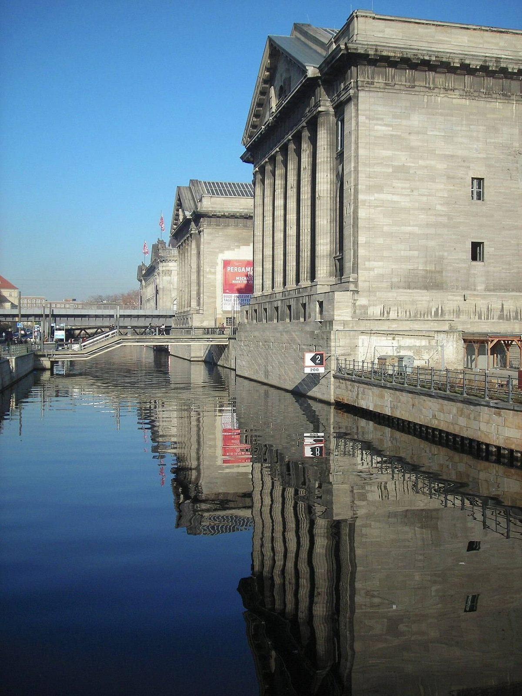
The Pergamon Museum, built in the early 1930s, is a testament to Germany's architectural and cultural heritage. It houses some of the most significant archaeological artifacts from ancient civilizations. The Pergamon Museum is part of Berlin's Museum Island, a UNESCO World Heritage Site. It contains extensive collections of Mesopotamian, Egyptian, and Islamic art. The reconstructed Market Gate of Miletus provides insight into ancient urban life. The museum also displays a replica of the Ishtar Gate from Babylon. Its interior features large open spaces with dramatic lighting effects.
Completed in 1930, the museum was designed by Alfred Messel and decorated by sculptor Arno Breker. Its architecture reflects both classical Greek and Roman influences, showcasing grandiose columns and intricate details. The museum’s most famous exhibit is the Pergamon Altar, which was reconstructed from fragments discovered during excavations at Pergamum in Turkey. Visitors come here to see one of the world's greatest collections of ancient art and architecture, including the iconic Pergamon Altar and the Market Gate of Miletus.
Potsdamer Platz
Address: Mitte / Tiergarten border | Style: Late 20th-century high-rise | Period: Late 19th century
Once the bustling heart of Berlin's cultural and political life, Potsdamer Platz today is a vibrant hub of commerce, entertainment, and urban renewal. Surrounded by iconic landmarks like Sony Center and the Brandenburg Gate, it has evolved into one of Europe’s most dynamic urban spaces. High-rise cluster of offices, cinemas, and Sony Center’s tent roof—built on empty Wall death-strip land. Located at the intersection of several major streets, making it easily accessible by foot or public transport. Home to numerous cafes, bars, and boutiques that attract locals and tourists alike. The site of annual festivals and events showcasing Berlin's diverse culture. Notable architectural features include the Sony Center and the newly restored Brandenburg Gate. Served as a checkpoint between East and West Berlin during the division of Germany. Film festival premieres use the cinemas here. Wall markers in the pavement show the former line.
Originally built in the late 19th century as a central transportation hub, Potsdamer Platz became the symbolic center of West Berlin during the Cold War era. After being largely destroyed during World War II, it was reconstructed in the 1980s and '90s to reflect its former glory. Today, it's known for its modern architecture, including the Sony Center, which houses cinemas, shops, and restaurants. Bustling pre-war hub, wasteland after 1961, mega-project in the 1990s as Berlin capital moved back. A must-visit for anyone interested in Berlin's rich history and contemporary urban development. Symbol of post-Wall reconstruction density.
Red City Hall
Address: Rathausstraße, Mitte | Style: Neo-Renaissance | Period: 1861–1867
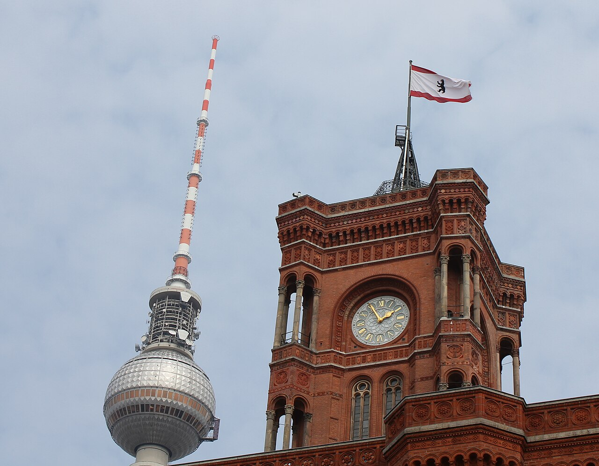
The Red City Hall (Rotes Rathaus) is Berlin's iconic landmark and the seat of the city's borough government. It stands majestically on the banks of the River Spree, its striking red façade a symbol of the city's vibrant culture. Red-brick Neo-Renaissance seat of Berlin’s city government facing the Neptune fountain toward Alexanderplatz. It is located at the intersection of Museum Island and the historic Mitte district. The interior features ornate decorations and impressive artworks by renowned artists. Each year, the Christmas market held here attracts thousands of visitors during winter. Its famous clock tower houses a mechanical carillon that plays every hour. During World War II, the building sustained significant damage but was later restored to its former glory. Occasional public tours when sessions allow. TV tower appears framed down Rathausstraße.
Built between 1861 and 1867, the Red City Hall was originally designed by architect Ernst von Ihne as a traditional neo-Renaissance building. Its distinctive red brickwork and towering spire make it one of the most recognizable structures in Berlin. Over time, it has become synonymous with the city's political life and cultural heritage. Completed in 1869; damaged in war, repaired in GDR era; continues as senate headquarters. Visiting the Red City Hall offers a glimpse into Berlin’s rich architectural history and provides a unique opportunity to explore the heart of local governance. Political heart of the Land Berlin amid sightseeing density.
Reichstag Building
Address: Platz der Republik, Mitte | Style: Historicist with contemporary glass dome | Period: 1884–1894
The Reichstag Building is Berlin's iconic landmark and a symbol of German democracy. Originally built in the late 19th century as the seat of Germany’s parliament, it was heavily damaged during World War II but underwent a remarkable transformation after reunification. Historic parliament building with Norman Foster’s glass dome—registration usually required to visit the terrace. Designed by British architect Norman Foster, the glass dome allows visitors to observe parliamentary proceedings live. It houses the Bundestag, Germany's federal legislative body. Opened for public tours in 2001, attracting millions of visitors annually. Located at the heart of Berlin's historical center near the Brandenburg Gate. The interior features stunning neo-gothic elements combined with contemporary design. Book a timeslot online for the dome walkway. The western lawn offers classic sunset views across the Tiergarten.
Constructed between 1884 and 1894 by architect Paul Wallot, the building served as the home of the German Empire's Parliament until 1933 when it was set on fire under mysterious circumstances. After extensive damage during WWII, the structure was reconstructed beginning in the early 1990s to become a modern architectural marvel. Opened in 1894; fire in 1933, wartime ruin, then slow reconstruction; the Bundestag returned after the dome renewal in 1999. Visiting the Reichstag offers breathtaking views of Berlin and provides insight into the country's political history. Working seat of Germany’s federal parliament with public access to debate galleries.
Soviet War Memorial (Treptower Park)
Style: Modernist | Period: 1945–1949
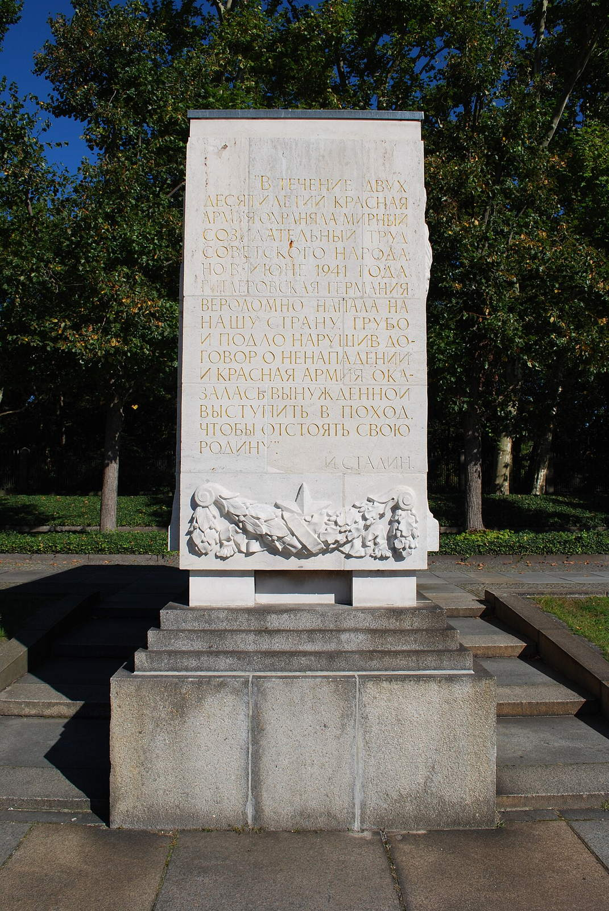
The Soviet War Memorial, located within the tranquil confines of Treptower Park, is a poignant tribute to the soldiers who sacrificed their lives during World War II. This monument stands as one of Berlin's most moving memorials, commemorating the bravery and loss of the Red Army. The memorial includes a large granite wall engraved with the names of more than 11,000 Soviet soldiers who died in Berlin. It is considered one of the largest and most impressive Soviet memorials outside Russia. Each year, on May 9th, thousands gather here to mark Victory Day, honoring the fallen heroes. The surrounding park offers peaceful walking paths and green spaces where locals and tourists can relax. The memorial also houses a museum dedicated to the Soviet military presence in Berlin.
Constructed between 1945 and 1949, the memorial was designed by sculptor Ernst Neustadter and architect Werner March. It features a towering obelisk adorned with statues representing mothers grieving over lost sons, symbolizing the sorrow and sacrifice of those who fought against Nazi Germany. The park itself has been a site for remembrance since its creation after the war. Visiting the Soviet War Memorial allows visitors to reflect on the horrors of war and pay homage to the millions who gave their lives for freedom.
Situated on Berlin's historic Nikolayviertel district, St. Nikolay Church is a testament to the city's rich architectural heritage. Its neo-Gothic design, completed between 1846 and 1859, reflects the influence of the Victorian era. Rebuilt twin-towered church marking Berlin’s medieval core—museum inside explains the city’s founding legends. Completed in 1859 after years of meticulous construction work. Designed by renowned architect Karl Friedrich Schinkel. Features a prominent neo-Gothic style with elaborate stained-glass windows. Located within the charming Nikolayviertel neighborhood, known for its cobblestone streets and traditional architecture. Serves as a significant landmark in Berlin's cultural landscape. Small cafés and craft shops surround the block. The Märkisches Museum is nearby for deeper history.
Built during the mid-19th century, St. Nikolay Church was designed by architect Karl Friedrich Schinkel, who also oversaw the construction of several other notable buildings in Berlin. The church's distinctive spire and intricate stained-glass windows are highlights of its interior, showcasing the artistic craftsmanship of the time. 13th-century origins; destroyed in 1945; recreated in 1980s East German quarter reconstruction with historicist detail. Visitors come to admire the church's unique architecture and historical significance, offering a glimpse into Berlin’s past. Anchor of the tourist Nikolaiviertel lanes and river bridges.
Tempelhofer Feld
Period: 1936
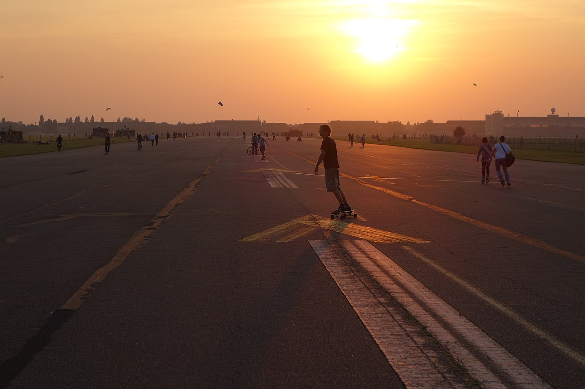
Once a symbol of Berlin's division during the Cold War, Tempelhofer Feld is now a vibrant urban park and cultural hub. It was originally built as an airfield in 1936, hosting Nazi Germany’s first international airport. Opened in 1936 as one of Europe's largest airports. Hosted the first international aviation exhibition in Nazi Germany. Served as a strategic location during the Berlin Airlift. Closed in 1948 and remained abandoned until its redesign in 2001. Today, it boasts state-of-the-art sports fields, museums, and performance venues.
Initially constructed in 1936 as Berlin's main airport, Tempelhofer Feld served as a key transportation hub until it closed in 1948 due to structural issues. After World War II, it became part of the American sector, later serving as a symbolic barrier between East and West Berlin. The field reopened in 2001 after extensive renovations, transforming into a modern park with recreational facilities, event spaces, and open green spaces. Visit Tempelhofer Feld for its unique blend of historical significance and contemporary urban design, offering a place where nature meets culture.
The Topography of Terror is a museum dedicated to the atrocities committed by the Nazi regime during World War II. Located on Berlin's Prinz-Albrecht-Straße, it stands on the site where the notorious Gestapo and SS headquarters once stood. Open-air trench along Gestapo cellar foundations plus documentation centre on SS and police terror. It is situated near the former Berlin Wall and the Jewish Museum, making it part of a broader cultural and historical district. Exhibits include original documents, photographs, and artifacts that illustrate the methods used by the Nazis to suppress opposition. The museum also highlights the role of ordinary citizens who collaborated with the regime. Guided tours are available for deeper understanding of the exhibits and context. There is an outdoor memorial garden commemorating victims of Nazi persecution. Outdoor panels readable in rain or shine. Adjacent to Martin-Gropius-Bau for art blockbusters.
Established in 1996, the museum was created to document the horrors of the Third Reich and educate visitors about the dark history of the Nazi era. It features exhibits that explore the rise of the Gestapo, the SS, and their brutal tactics used against dissenters and political opponents. Excavated Wall strip exposed SS ruins; permanent exhibition since the 2010 building by architect Ursula Wilms. Visiting the Topography of Terror provides insight into one of the most infamous periods in modern history, offering a somber reflection on tyranny and its consequences. Free, solemn counterweight to souvenir Berlin Wall stalls.
Tränenpalast (Palace of Tears)
Period: 1996
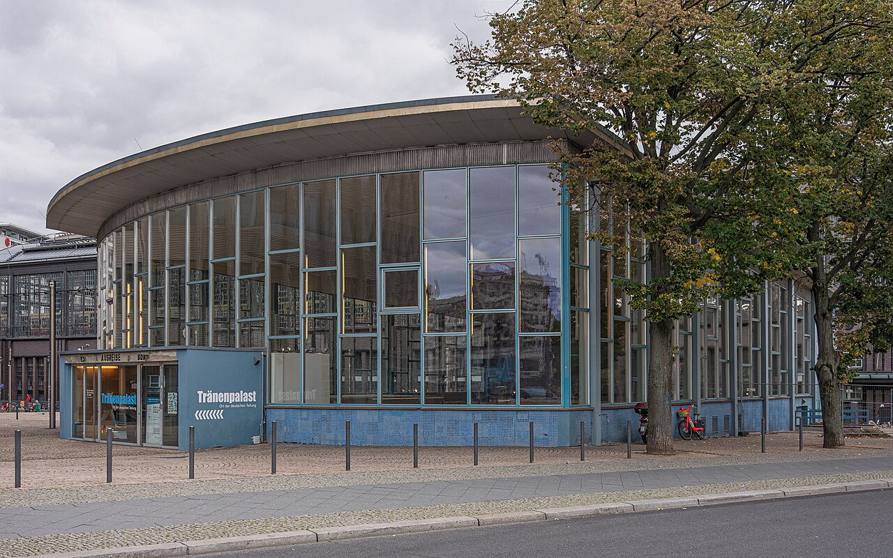
The Tränenpalast, also known as the Palace of Tears, is a memorial museum located on Berlin's Bernauer Straße. It commemorates the suffering and separation caused by the Berlin Wall during the Cold War era. It houses exhibits that document the tragic stories of people who attempted to escape through the wall. The museum provides interactive displays explaining the political context of the time. Visitors can see reconstructed checkpoints and watch documentary films. Located near the former border, the site has panoramic views overlooking the remains of the wall. Guided tours are available for deeper understanding of the site’s history.
Built in 1996, the Tränenpalast was constructed to honor those who died attempting to cross the border between East and West Germany. The site served as a checkpoint where many refugees were separated from their loved ones. Today it stands as a poignant reminder of the division and loss experienced by countless individuals during the divided city’s darkest years. Visiting the Tränenpalast offers insight into the emotional and historical significance of the Berlin Wall’s impact on families and communities.
The Victory Column, a soaring monument standing proudly on Berlin's Tiergarten, is one of the city's most iconic landmarks. Originally constructed to commemorate Prussia’s victory over France in the Battle of Nations, it was later restored and rededicated as a symbol of German unity. Gilded Victoria atop a red-granite drum in the traffic roundabout—climbable for a treetop panorama. It is located at the center of Berlin's famous Tiergarten park. The column was damaged during World War II and underwent extensive restoration work post-war. Today, visitors can ascend the tower for panoramic views of the city. Its design combines neoclassical elements with Baroque influences. Victoria's statue weighs approximately three tons. Tunnels connect under the roundabout for pedestrians. Wear windproof layers on the gallery.
Built between 1864 and 1865 by Karl Friedrich Schinkel, the column stands 66 meters tall and features a bronze statue of Victoria, the Roman goddess of victory, atop its pinnacle. It served initially as a military memorial but was later transformed into a national symbol after World War II. Originally sited before the Reichstag for 1860s wars of unification; moved by Nazis deeper into the Tiergarten. Visiting the Victory Column offers a breathtaking view of Berlin and serves as a reminder of both historical triumphs and modern reunification. Protest marches historically circle “Goldelse”; today a popular photo stop.